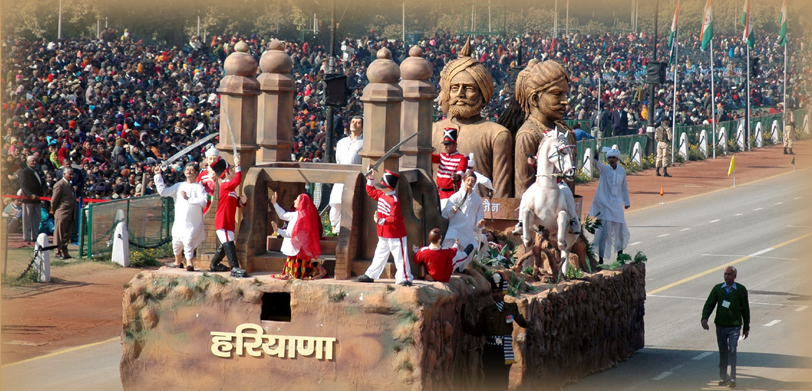

Welcome to Haryana!

Haryana, located in northern India, is a state rich in cultural heritage, history, and agricultural prosperity.
Known for its vibrant festivals, traditional art forms, and significant historical sites, Haryana offers a unique
glimpse into North Indian culture and traditions.
Festivals in Haryana are celebrated with great enthusiasm and reflect the state's cultural diversity and
agricultural roots. Baisakhi, marking the harvest season, is a major festival celebrated with folk music, dance
performances like Ghoomar and Phag Dance, and traditional festivities. Teej, celebrated predominantly by women,
involves vibrant processions, swings adorned with flowers, and cultural performances that celebrate monsoon rains
and marital bliss. Other festivals such as Diwali, Holi, and Navratri are also celebrated with fervor, showcasing
Haryana's rich cultural tapestry.
Haryanvi cuisine is known for its robust flavors and rustic simplicity, influenced by the state's agricultural
abundance. Staple foods include wheat-based bread like Roti and Paratha, often accompanied by vegetables, pulses,
and dairy products. Dishes like Kadhi Pakora, Bajra Khichdi, and Singri ki Sabzi (drumstick curry) are popular.
Milk-based sweets such as Kheer and Rabri are enjoyed during festivals and special occasions, reflecting Haryana's
culinary traditions.
Music and dance are integral to Haryana's cultural heritage, with traditional folk forms playing a significant
role in celebrations and social gatherings. The Ragini music tradition, characterized by lyrical compositions that
narrate tales of love and valor, is a prominent aspect of Haryanvi music. Folk dances like Ghoomar, Saang, Phag,
and Dhamal are performed during festivals and weddings, accompanied by traditional instruments like Dholak,
Harmonium, and Chimta (tongs). These cultural expressions embody the spirit and ethos of rural Haryana.
Haryana's architectural heritage is marked by ancient temples, forts, and monuments that reflect its historical
significance. The Kurukshetra region, known for its association with the Mahabharata, features archaeological
sites like the Bhishma Kund and Kurukshetra War Memorial. The Surajkund Mela, held annually near Faridabad,
showcases traditional crafts, cultural performances, and cuisine from across India, attracting visitors from
around the world.
Handicrafts in Haryana are renowned for their craftsmanship and artistic excellence. The state is known for its
pottery, weaving (particularly of durries and rugs), metalwork, and Phulkari embroidery. Artisans in regions like
Panipat and Hisar create exquisite textiles, carpets, and leather goods, contributing to Haryana's rich artisanal
heritage. These handicrafts not only serve as cultural symbols but also support local livelihoods and promote
traditional craftsmanship.
Natural beauty adds to Haryana's charm, with lush green fields, seasonal rivers, and serene rural landscapes
defining its scenic allure. The Sultanpur Bird Sanctuary, a haven for migratory birds, and the Damdama Lake near
Gurgaon offer opportunities for birdwatching, boating, and picnicking amidst natural surroundings. The state's
agricultural prosperity and commitment to sustainable development contribute to its eco-tourism potential and
biodiversity conservation efforts.
In conclusion, Haryana's culture is a vibrant mosaic of festivals, cuisine, music, dance, architecture,
handicrafts, and natural beauty. Its rich cultural heritage and agricultural traditions make it a compelling
destination for travelers seeking to explore North Indian culture and experience the warmth of Haryanvi
hospitality.